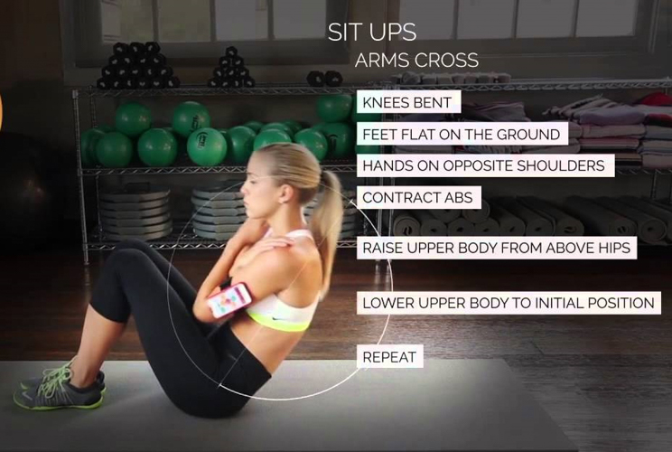
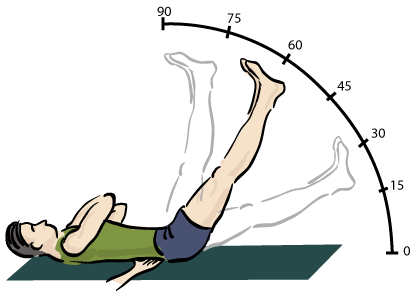
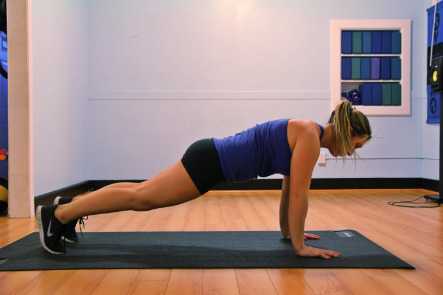

The core is what joins your upper and lower body, and while definitions of what constitutes the core can vary, anything that lies between the upper and lower halves of your body that cannot be definitively identified as either, shall be our definition of the core.
Training the core muscles can be approached in two fashions. The current fashion is for static holds when it comes to core training, but both approaches can be mixed and matched with equal success. Neither approach is inherently more/ less safe than the other, although it is important to observe decent exercise form to avoid lower back pain or other issues.
Dynamic Movements
 Any core exercises where there is a movement component, these are your situps/ crunches/ etc that most are familiar with when they imagine core training. Key families of exercises in this category include sit-ups and leg-raises respectively, although more intermediate and advanced core movements can be found in the form of exercises such as windshield wipers and dragon-flag progressions when such are needed.
Static Holds

Static holds for core training have become immensely popular in recent times, with their proponents pointing to the functional role of the core muscles to resist movement in day-to-day life. The lack of spinal flexion in such movements thus reducing the potential for back injury is also stated as a key reason why static holds should find a place in your core training. Planks and hollow-body holds are key examples of static holds that are highly effective in training your core.